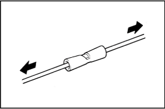

REFERENCE
REFERENCE
- When connecting a wire harness at there or more spots to the same connector, cut the wire harness as shown on the right.
| Step 3. Replace the terminal. |
1. Select the appropriate repair wire terminal
Select the correct replacement terminal with lead, from the supply parts.
2. Replace the wire terminal.
Use the new wire lead as a guide for proper length.
REFERENCE
3. Remove the sheaths from the existing wire and the repair terminal wire.
| A(mm) | 8~11 |
4. Select Correct Size of Sleeve from the Supply Parts.
Using a caliper, measure the outer diameter of the wire or the diameter of the wire strand.
| Nominal size= | 3.14x(Diameter of wire lead)2 |
| 4 |
 Use the table to determine proper sleeve size
Use the table to determine proper sleeve size
| Sleeve size | Part Number | Nominal size of wire (Outside Diameter of wire) |
| Small | 82999-12010 | 0.3 or less (1.0 - 0.2 mm) |
| Medium | 82999-12020 | 0.5 - 1.25 (2.0 - 1.0 mm) |
| Large | 82999-12030 | 2 or more (5.0 - 3.0 mm) |
5. Join the strands of the existing wire and new terminal wire
When nominal size is 0.3 or more
Overlap the two stripped wire ends inside the sleeve as illustrated on
the right.
 REFERENCE
REFERENCE
 When nominal size is less than 0.3.
When nominal size is less than 0.3.
The crimp portion of the copper wire crimping tool has the color marks on it. Place the sleeve in the correct portion of the color mark that corresponds to the color of the sleeve.
 With the center of the sleeve correctly placed between the crimping jaws, squeeze the crimping tool until either end comes into contact at the section marked by "CLOSE HERE".
With the center of the sleeve correctly placed between the crimping jaws, squeeze the crimping tool until either end comes into contact at the section marked by "CLOSE HERE".
Pull the joined wires to either end. Make sure that they are joined firmly by the sleeve.
Crimp both ends of the sleeve with the crimping tool at the "INS" position.
6. Waterproof and insulate the joint area
Ready about 100 mm (3.94 in.) of silicon tape (Part No. 08231-00045) and peel off the film.
Stretch the silicon tape until its width is reduced by half.
About 10 mm (0.39 in.) from the end of the sleeve, wrap the silicon tape
around the sleeve three or more times while stretching the tape.
 Wrap the remaining part of the sleeve with half of the tape overlapping
at each turn.
Wrap the remaining part of the sleeve with half of the tape overlapping
at each turn.
Firmly wrap the tape two times or more about 10 mm (0.39 in.) from the other end of the sleeve, then wrap the tape back towards the start again and firmly finish winding the tape around the center of the sleeve.
1. Select the appropriate repair wire terminal
Select the correct replacement terminal with lead, from the supply parts.
2. Replace the wire terminal.
Use the new wire lead as a guide for proper length.
REFERENCE
3. Remove the sheaths from the existing wire and the repair terminal wire.
| A(mm) | 8~11 |
4. Select Correct Size of Sleeve from the Supply Parts.
Using a caliper, measure the outer diameter of the wire or the diameter of the wire strand.
| Nominal size= | 3.14x(Diameter of wire lead)2 |
| 4 |
Use the table to determine proper sleeve size
| Sleeve size | Part number | Nominal wire size(mm2) |
| S | 82999-52010 | 0.5 - 1.0 |
| M | 82999-52020 | 1.25 - 2.5 |
5. Join the strands of the existing wire and new terminal wire
Using the table shown below, confirm the appropriate sleeve size and crimp size.
| Sleeve size | Crimp size | Crimp mark |
| S | 1.25 | 1 |
| M | 2 | 2 |
| Part name | Part number |
| SST(Crimping tool) | 09042-2C100 |
Squeeze the tool handles to disengage the ratchet.
Place the sleeve in the crimping area of the tool, and hold the tool handles to hold the sleeve.
Insert the wire into the sleeve as far as it can go.
Squeeze the tool handles until the ratchet disengages again.
Check that the crimp mark is correct.
Pull the connected wires to check that they have been connected securely.
6. Waterproof and insulate the joint area
Cover the joints with heat shrink sleeves, and position the joints at the center of the sleeves.
| Part name | Part number |
| Heat shrink sleeve | 82999-30010 |
Using a dryer or heat gun, apply hot air to a heat shrink sleeve for about 10 seconds.

Turn off the dryer or heat gun, and check if a resin substance has come out of the gap between the shrink sleeve and wire at each sleeve end. Repeat step (b) described above until resin substances come out.